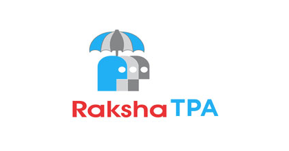
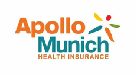

SUDAR HOSPITAL& Research Institute
Sudar Hospital And Research Institute brings together three specialised divisions — surgical, ophthalmic and nephrology care — supported by modern diagnostics, in-house pharmacy and round-the-clock critical care, all under one integrated roof.

Led by Dr. S. Sasiraj, pioneer of laparoscopy in Thanjavur, our surgical division delivers safe, high-quality care across a wide range of general and minimally-invasive procedures.
Minimally-invasive (laparoscopic) surgery means smaller incisions, less pain, a shorter hospital stay and a faster return to everyday life.
Led by Dr. G. Rohini, our eye-care division offers advanced, technology-driven treatment in a clean, well-equipped unit.


Our nephrology division runs 3 dialysis machines 24 hours a day, with compassionate, patient-centred care and strict infection-control standards. Empanelled with CMHIS + PMJAY insurance for affordable, cashless treatment.
A broad spectrum of surgical and supportive specialities, backed by modern infrastructure and a dedicated clinical team.
Trauma, fracture care and joint procedures supported by modern imaging and theatre facilities.
Diagnosis and surgical management of urinary tract and related conditions.
Women's health surgeries including hysterectomy (TAH, VH, LAVH) and related procedures.
Routine and complex general surgical procedures with day-care-friendly recovery.
In-house Lab, CT, X-ray, ECG, TMT, Ultrasound scan and Pharmacy.
Round-the-clock intensive care with continuous monitoring for critically ill patients.
Minor procedures with same-day discharge.
A wide range of open and minimally-invasive procedures performed by our experienced surgical team.
Pre & post-operative care instructions for our surgical patients, plus everyday precautions for diabetic foot and kidney care — available in English and Tamil.
Advanced surgical and medical care made affordable and accessible through government insurance schemes.
Empanelled with CMHIS & PMJAY and leading insurance providers & TPAs — for smooth, cashless treatment.


Tell us your concern and our team will guide you to the right speciality. Book an appointment on WhatsApp or call us directly.